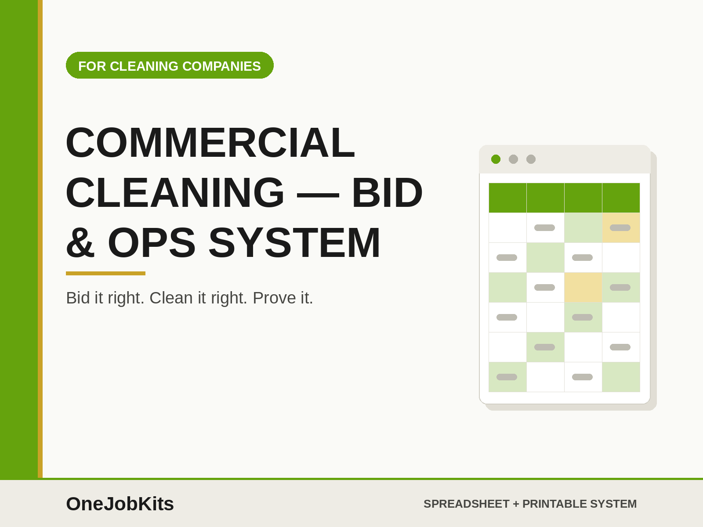

OneJobKits · Kit #15
Commercial Cleaning Bid & Ops System — cleaning bid calculator spreadsheet

Residential cleaning pays by the house. Commercial cleaning pays by the contract — and contracts are won or lost on the bid. If you are looking for a cleaning bid calculator spreadsheet, you probably know both failure modes: price by gut and you either lose money every visit for a year, or bid so high you never hear back.
This page gives you the pricing engine free for one facility: the Bid Snapshot Calculator. Below it is the full system that replaces the gut — a per-square-foot bid builder on production rates by facility type, the walkthrough and proposal kit that wins the meeting, the profit dashboard that catches losing contracts before renewal, and the operations documents that keep the contract after you've won it. It is a business-organiser, calculator and template system only — not legal, tax or accounting advice.
Free download — start with the Bid Snapshot Calculator
The Bid Snapshot Calculator prices one facility on one sheet: square footage, visit frequency and your labour rate in — hours, cost and a monthly price with margin out. One bid, priced on real numbers instead of a guess.
Download the free Bid Snapshot Calculator (Excel)Get it on Gumroad instead
What the snapshot does not do: it prices one job in isolation. The full system below prices every job from your real cost base — and then, the part most calculators skip, tracks whether each signed contract is actually making money month after month.
What's inside the full system
- Bid workbook (spreadsheet, 8 tabs) — START HERE (the 20-minute setup) · Business Cost Setup — your real costs once: cleaner and supervisor wages, payroll burden %, supplies per hour, monthly overhead, target margin, minimum monthly contract price; loaded rates and overhead-per-hour calculate · Facility Rate Library — editable production rates (sq ft per labour hour) for offices, medical offices, banks, retail, restaurants, schools, gyms and post-construction · Bid Builder — facility type, sq ft, visits per week and extra task time → cleaning hours, labour, supplies, overhead, full monthly cost and a quoted monthly price at your target margin, never below your minimum; price per visit and per sq ft included · One-Time Pricing — initial/deep, move-out and make-ready cleans priced separately at slower speed factors · Contract Register — every contract with its bid hours and monthly price · Contract Profit Dashboard — real hours in; true cost, margin $ and margin % out; contracts flag themselves OK · BELOW TARGET MARGIN · LOSING MONEY · Subcontractor & Insurance Log — COI and workers-comp expiries with automatic Current / EXPIRING / EXPIRED status
- Walkthrough & Proposal Kit (Word + fillable PDF, 102 fields) — site walkthrough survey (rooms, surfaces, fixtures, problem areas), scope-of-work builder, and a clean proposal template — completable on a tablet at the site visit
- Service Agreements (Word + fillable PDF, 44 fields) — recurring-service agreement, one-time-service agreement and the scope/exclusions worksheet, attorney-review note throughout
- SOP & Inspections (fillable PDF, 84 fields) — SOP checklists by area (Office · Restroom · Floor Care · Trash & Recycling), supervisor quality-inspection scorecards and the corrective-action log
- Hiring Pack (Word + fillable PDF, 66 fields) — employment application, onboarding checklist, training sign-off and subcontractor agreement template
- Client Onboarding (fillable PDF) — the first-30-days workflow for every new account: access & alarms, week-1 services, settle-in, day-30 review
- Worked example file — the system filled with a fictional five-contract business (shown below)
- Pro ($199) adds: the Post-Construction Pricing tab (rough / final / touch-up phases priced separately), the Medical Office Detail bid builder, and the Pro Modules PDF (42 fields — post-construction checklists and the medical-office enhanced inspection scorecard)
A filled example — so you can see the finished thing
The kit's own worked example follows a fictional five-contract cleaning business. The business and clients are invented; the inputs below are the example file's own:
| From the example file | What is entered and tracked |
|---|---|
| The bid being built | Harbor Point Office Park — a General Office facility, 10,000 cleanable sq ft, 3 visits per week, with 0.5 hours of extra task time and 0.25 hours of supervisor check time per visit fed into the Bid Builder |
| Contract Profit Dashboard | All five contracts tracked against their bid hours in the sample month — actual hours logged at 63, 50, 92, 55 and 60 — with true cost and margin calculated per contract |
| The story the flags tell | Per the kit's own walkthrough: one of the five contracts is healthy and one is quietly losing money — the dashboard's status flags exist so you find that out in the monthly routine, not at renewal |
That is the whole argument for a system over a calculator: the bid gets you the contract; the dashboard tells you whether keeping it is a good idea.
Who it is for
Owners of residential cleaning businesses bidding their first commercial contracts, and new commercial-only cleaning startups — anyone pricing recurring contracts who needs the bid, the paperwork and the monthly profit truth in one place.
Who it is not for
Solo residential cleaners (a simpler kit serves you), and anyone wanting guaranteed contracts or legal advice. The calculator prices from your rates and your costs — it makes your numbers honest; it cannot win the bid for you.
Questions buyers ask
- How does the Bid Builder actually price a job?
- From production rates, not gut feel. You enter the facility type, cleanable square footage and visits per week; the Facility Rate Library supplies the production rate (square feet per labour hour) for that facility type, and the builder adds extra task time and supervisor check time to get true hours per visit. Those hours run through your loaded costs from Business Cost Setup — wages with payroll burden, supplies, overhead per hour — to a full monthly cost, and the quoted price is that cost at your target margin, never below your minimum monthly contract price. You also see price per visit and per square foot.
- Are the rate library's numbers the 'correct' prices?
- No — they are editable starting inputs, and the system says so. The library ships production rates for offices, medical offices, banks, retail, restaurants, schools, gyms and post-construction as a place to start; the method in the kit is to time your own crew on two or three real jobs and adjust the library to your measured speed. Your crew's real production speed and your real costs govern every bid — the calculator makes the numbers honest; it cannot win the bid or guarantee a profit.
- How are one-time cleans priced?
- Separately, on their own tab — never buried inside the monthly price. Initial and deep cleans, move-outs and make-ready cleans use slower one-time speed factors (0.60 / 0.70 / 0.75 of the recurring rate), because first cleans genuinely take longer. The recurring bid stays clean and the one-time work is priced like the different job it is.
- How do I find out a contract is losing money before renewal?
- On the Contract Profit Dashboard, monthly: you type the month's real hours per contract and the sheet calculates true cost, margin dollars and margin percent against the contract price — and flags each contract itself: OK, BELOW TARGET MARGIN, or LOSING MONEY. The example file shows a five-contract business where one contract is quietly losing money while the others carry it; the monthly routine is to reprice or exit what flags red, before renewal, not after.
- What about subcontractors and insurance?
- The Subcontractor & Insurance Log tracks every sub's certificate of insurance and workers-comp expiry with an automatic status — Current, EXPIRING WITHIN 30 DAYS, or EXPIRED — under the kit's standing rule: no valid COI, no work. The Hiring Pack (application, onboarding checklist, training sign-off, subcontractor agreement template) covers the people side in Word and fillable PDF.
- Are the service agreements ready to sign?
- They are general templates — recurring-service and one-time-service agreements plus a scope/exclusions worksheet — and every page carries the attorney-review note. Have an attorney licensed in your state review and adapt them before use. The same applies to the subcontractor agreement in the hiring pack.
- What does the free calculator cover, and what does the full system add?
- The free Bid Snapshot prices one facility: square footage, frequency and your labour rate in — hours, cost and a monthly price with margin out. The full system bids every job that way and runs what comes after: the cost setup and rate library behind the numbers, one-time pricing, the contract register and profit dashboard, the walkthrough and proposal kit, agreements, SOP inspections, hiring and onboarding — the win-it and keep-it documents, not just the price.
Prices
Standard: $149 · Pro (adds post-construction + medical-office modules): $199 — one-time payment, digital download. No subscription; the files are yours.
Can't find the kit you need?
We build it. Ask us — first asker gets it at half the shelf price. Tell us the job at onejobkits.com and we will build the kit for it.
Related kits
Please know: this is a business-organiser, calculator and template system only — not legal, tax or accounting advice. The service agreements, subcontractor agreement and hiring documents are general templates — have an attorney licensed in your state review and adapt them before use. Library rates are editable starting points, not correct prices; the system cannot guarantee that any bid is won or any contract profitable. The example business, clients and numbers are fictional.